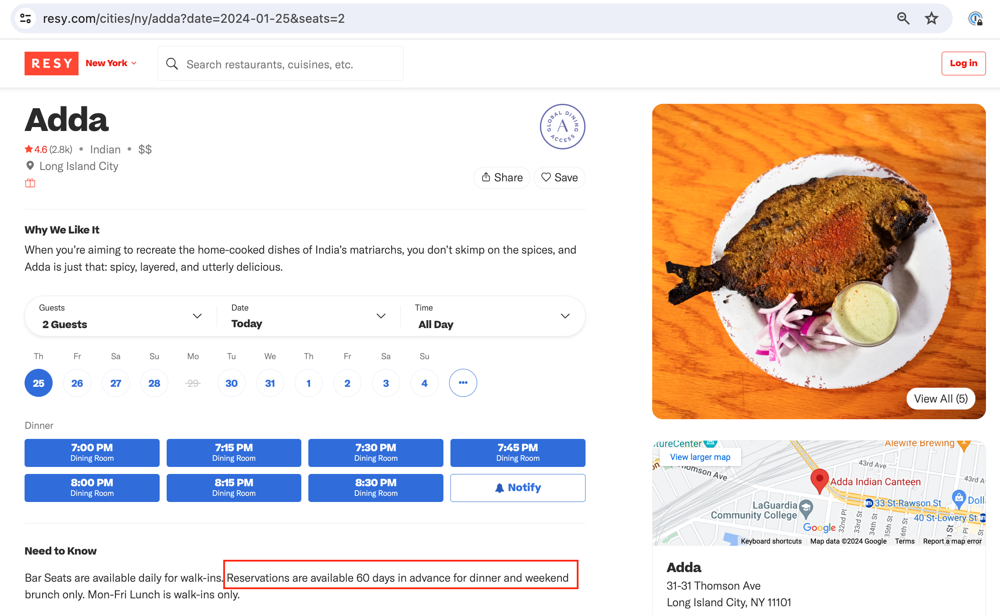
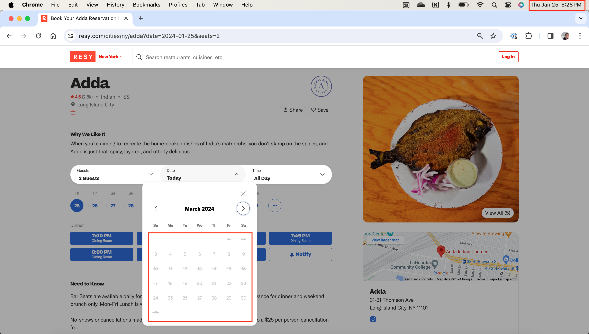
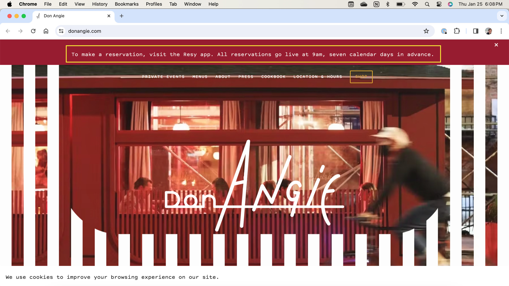

As I was working on this site, I was struck often by how difficult it was to compile and verify the reservation opening date & time for each restaurant. I had a few sources of available data:
- Information posted on restaurants' websites or Resy descriptions
- Third party websites (e.g. Eater) and social media (e.g. Reddit)
- Personal experience (e.g. making reservations in the past, checking Resy waiting for reservations to open)
Seemingly, with so many potential sources, this aggregation would be easy. Or so I thought, until I actually tried it! More on each of those three sources (& their challenges/limitations) below:
Restaurants' Websites or Reservation Pages
Since this data is shared by the restaurants themselves, my initial assumption was that this was the best type of data to use, where possible.
Availability is the first issue - only a fraction (maybe 20% or so) of the restaurants I tried to gather data from actually published this explicitly. But what was most surprising to me about this data was that the published times/dates that reservations would open, as shared by the restaurants themselves, were often wrong! As I learned more, I determined that there are a handful of different reasons behind this, depending on the situation.
Outdated Data
This one is simple, but sometimes restaurants just don't update their sites when they make changes.
Take, for example, Adda. Their Resy page says, super clearly, that reservations are available 60 days in advance:
Easy enough! Since 60 days is ~2 months, when I check Adda's Resy page on January 25th, I expect that reservations should be open through late March. But wait a second:
On January 25th, the entire month of March shows as unreleased, no reservations anywhere to be seen. The latest open reservation is for February 23rd, or 29 days in advance. The 60 day number came from Adda itself, but it's clear that it doesn't match the reality that you'll need to snag a reservation.
Defining 'In Advance'
While some reservation info shared by restaurants is wrong or outdated, another issue involved in taking restaurants at their word is the concept of reserving a table 'X days in advance.'
'X Days in Advance' can actually be fairly tricky to conceptualize and then calculate. As a hypothetical, if reservations for a restaurant open at midnight on Monday night/Tuesday morning, and reservations open '1 day in advance', then at 12:01 would reservations be open through the end of the day on Tuesday or through the end of the day on Wednesday?
It's not totally obvious, and it's clear that not all restaurants accounted for the ambiguity in the same way.
Take, for example, two restaurants, Don Angie and Rubirosa, that both kindly publish when their reservations open: In both cases, 7 days in advance.
Here's Don Angie's guidance:
And Rubirosa's:

You'll notice that Rubirosa reservations are open through February 1st, as of 6 pm ET on January 25th. At any time between 9 am (when Don Angie opens reservations) and midnight (when Rubirosa opens reservations), we should expect reservation availability to be the same, since both open 7 days in advance.
But when we look at Don Angie's availability, it's a different story:

Despite identical messaging on their sites, reservations for Don Angie are open for one fewer day than reservations at Rubirosa. Neither restuarant is wrong, or lying, they're just using different definitions for '7 Days in Advance.' That's also why, looking at the 'days in advance' in the table, you see a lot of wacky numbers, like 6 and 29, alongside rounder numbers, like 7 and 30. Restaurants defined 'in advance' differently in practice, so the standardized data needs to reflect that, even if it doesn't align perfectly with the website copy.
Mondays and Holiday Parties
For the sake of simplicity, my calculator and data also assumes that every restaurant will be open on every night. This isn't true, and is a very real limitation of the calculator as it exists today. Adding in regular days that restaurants are closed (e.g. that a restaurant is never open on Mondays) would likely be a good additional feature for me to add. What's much more challenging is to account for special events like restaurant buy-outs or ticketed holiday dinners.
To pick on Don Angie again (sorry Don Angie), their website currently advertises that they'll be closed on two upcoming days for private events.

There's no mention of this on Resy, and many restuarants might not mention closures anywhere at all - they just don't permit reservations on that evening. This is harder to account for, and is unfortunately just a known risk of playing the Resy game.
Third Party Websites + Social Media
Since restaurant data was often incomplete or not quite right, I also looked at food magazines, reddit posts, and more, to find leads on when reservations opened for diffrernet restaurants
These are great data sources, and people are very generous in sharing their knowledge, but they suffer from a lot of the same issues: content gets out of date, or people make mistakes. I used a lot of third party data as an initial hypothesis, but used a 'trust but verify' strategy, which leads me to...
Personal Experience
Given all the considerations above, ultimately, a lot of this data either came from, or was verified by, me sitting around at 8:57 am with a bunch of reservation pages open, checking the data accuracy, and then at 9:03 am, refreshing everything and checking again.
Is this programmatic or scalable? Absolutely not! But did I do my best to ensure that the data was accurate (for now)? Yes! There are probably ways that I could have done this differently, perhaps via some sort of Resy bot or API access, but the whole point of this site was to offer an alternative resource for folks who don't use bots or buy reservations on appointment trader, and are doing the good, old-fashioned, refresh-at-the-right-time tactic.
The all important caveat
The point of all this context is twofold:
- First, to clarify that even if the data on this site doesn't match what you see on a restaurant's website or on Reddit doesn't mean it's innacurate!
- To emphasize that this data is ultimately imperfect and subject to innacuracies for a wide range of reasons, from restaurant closures to typos to policy changes, so please use it as a guide and a handy calculator tool, but know that it might not always be perfect. If something looks wrong (or you have a restaurant to add), don't hesitate to say something.
That said, it is the reservation game after all - these are hard-to-get reservations at coveted restaurants in New York. So with that, best of luck reserving a meal you're excited for!